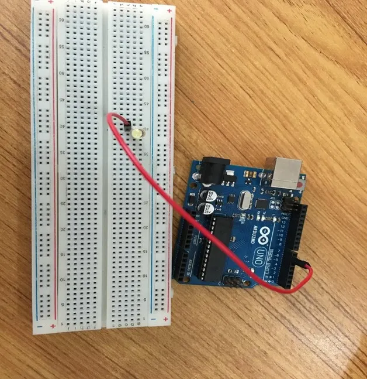

Mission 1.2: The Heartbeat¶
Role: Lab Apprentice
Objective: Make the circuit "come alive" with a steady pulse.
Result Preview¶
The LED will turn ON for 1 second, then OFF for 1 second.

1. The Call to Adventure¶
A steady light proves power is flowing, but a blinking light proves your code is pulsing. Your mission is to program the "Heartbeat" of your first machine.
2. The Toolkit¶
- 1x LED (Red)
- 1x Arduino Uno
- 2x Jumper Wires
- 1x Breadboard
3. The Blueprint¶
- Positive Leg (Long) -> Pin 6
- Negative Leg (Short) -> GND

4. The Logic¶
Algorithm:
- Define: Use Pin 6 for the LED.
- Setup: Set the pin to
OUTPUT. - Loop:
HIGH(ON) for 1000ms.LOW(OFF) for 1000ms.
The Code¶
// Mission 1.2: The Heartbeat
const int ledPin = 6;
void setup() {
pinMode(ledPin, OUTPUT);
}
void loop() {
digitalWrite(ledPin, HIGH); // Light ON
delay(1000); // Wait 1 second
digitalWrite(ledPin, LOW); // Light OFF
delay(1000); // Wait 1 second
}
5. Upload & Test¶
- Upload the code.
- Does the LED blink steadily?
- Experiment: Change
delay(1000)todelay(100). What happens to the "Heartbeat"?
6. Troubleshooting¶
- Light stays ON? You might have forgotten the
LOWcommand or the seconddelay. - Light stays OFF? Check if the LED is pushed all the way into the breadboard.